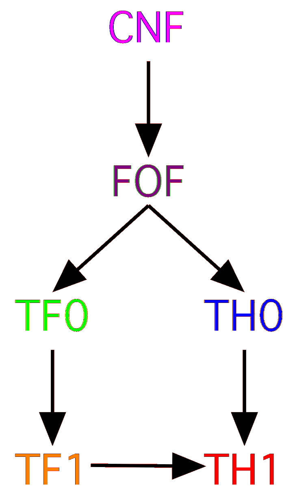

The TPTP Language Hierarchy

The TPTP Languages
- A Key to Success
- Years of development ...
- 1993 - CNF: Clause Normal Form
- 1997 - FOF: First-order Form
- 2004 - New syntax, BNF, etc.
- 2009 - TH0: Monomorphic Typed Higher-order Form (with arithmetic)
- 2010 - TF0: Monomorphic Typed First-order Form (with arithmetic)
- 2013 - TF1: Polymorphic Typed First-order Form (with arithmetic)
- 2016 - TH1: Polymorphic Typed Higher-order Form (with arithmetic)
- Parsers, tools, systems, all available
TH1: The Polymorphic Higher-order Form
- Combines TH0 with TF1 rank-1 polymorphism
- Compatible with existing higher-order logic ATP and ITP systems
- Halfway house for translation to TH0/TF1/FOF
- Let's hope it is adopted!